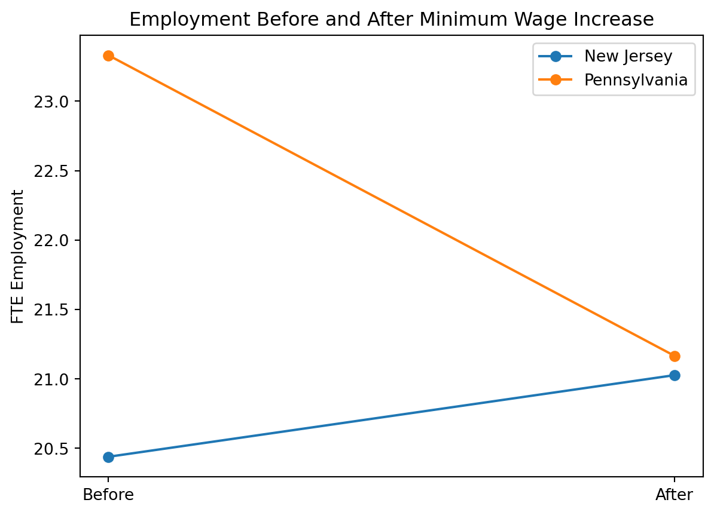

Minimum Wages and Employment: A Case Study of the Fast-Food Industry in New Jersey and Pennsylvania
Author
He Zou
Published
April 21, 2026
Introduction
This paper studies the effect of minimum wage increases on employment in the fast-food industry. In April 1992, the state of New Jersey raised its minimum wage from $4.25 to $5.05 per hour, while neighboring Pennsylvania did not change its minimum wage. This policy change provides a natural experiment to evaluate how firms respond to higher labor costs.
Card and Krueger (1994) collect survey data from fast-food restaurants in New Jersey and eastern Pennsylvania before and after the policy change. By comparing employment changes in New Jersey (treatment group) to those in Pennsylvania (control group), the authors implement a difference-in-differences (DiD) strategy to estimate the causal effect of the minimum wage increase.
The main question of the paper is whether an increase in the minimum wage reduces employment. Standard economic theory predicts a negative effect. However, the authors find that employment in New Jersey did not decline relative to Pennsylvania after the increase, and may have even increased slightly.
In this replication, I reproduce key summary statistics and the main difference-in-differences estimate from the paper. I also extend the analysis by presenting additional results to better understand the findings.
Main Analysis
Data Preparation
I begin by importing the original data set provided by Card and Krueger (1994). The data are stored as a flat ASCII file, which I read using whitespace as the delimiter.
import pandas as pddf = pd.read_csv("../data/njmin/public.dat", delim_whitespace=True, header=None)df.columns = ["sheet","chain","co_owned","state","southj","centralj","northj","pa1","pa2","shore","ncalls","empft","emppt","nmgrs","wage_st","inctime","firstinc","bonus","pctaff","meals","open","hrsopen","psoda","pfry","pentree","nregs","nregs11","type2","status2","date2","ncalls2","empft2","emppt2","nmgrs2","wage_st2","inctime2","firstin2","special2","meals2","open2r","hrsopen2","psoda2","pfry2","pentree2","nregs2","nregs112"]df.head()
/var/folders/1r/8gdjbp5925v9fjjt_6sq5h1m0000gn/T/ipykernel_50214/3896136088.py:3: FutureWarning:
The 'delim_whitespace' keyword in pd.read_csv is deprecated and will be removed in a future version. Use ``sep='\s+'`` instead
sheet
chain
co_owned
state
southj
centralj
northj
pa1
pa2
shore
...
firstin2
special2
meals2
open2r
hrsopen2
psoda2
pfry2
pentree2
nregs2
nregs112
0
46
1
0
0
0
0
0
1
0
0
...
0.08
1
2
6.50
16.50
1.03
.
0.94
4
4
1
49
2
0
0
0
0
0
1
0
0
...
0.05
0
2
10.00
13.00
1.01
0.89
2.35
4
4
2
506
2
1
0
0
0
0
1
0
0
...
0.25
.
1
11.00
11.00
0.95
0.74
2.33
4
3
3
56
4
1
0
0
0
0
1
0
0
...
0.15
0
2
10.00
12.00
0.92
0.79
0.87
2
2
4
61
4
1
0
0
0
0
1
0
0
...
0.15
0
2
10.00
12.00
1.01
0.84
0.95
2
2
5 rows × 46 columns
Missing values in the original data are coded as “.”, and I convert them to standard missing values.
Next, I assign variable names according to the codebook provided with the data. This allows me to work with meaningful variable names such as employment, wages, and prices rather than numeric column indices.
I then construct the key variables used in the analysis. In particular, I compute full-time equivalent (FTE) employment as the number of full-time workers plus managers plus half the number of part-time workers, following the definition in the paper. I also extract the starting wage and construct the price of a full meal as the sum of the prices of a soda, fries, and an entree.
Finally, I create a state indicator that distinguishes between New Jersey (treatment group) and Pennsylvania (control group), which will be used in the difference-in-differences analysis.
I begin by reproducing the first part of Table 2, which reports the distribution of store types in New Jersey and Pennsylvania. This part of the table shows the shares of Burger King, KFC, Roy Rogers, and Wendy’s restaurants, as well as the share of company-owned stores. The purpose is to compare the composition of restaurants across the two states before examining employment and wage outcomes.
# Table 2, Part 1: distribution of store typesdf["bk"] = (df["chain"] ==1).astype(float)df["kfc"] = (df["chain"] ==2).astype(float)df["roys"] = (df["chain"] ==3).astype(float)df["wendys"] = (df["chain"] ==4).astype(float)df["company_owned"] = df["co_owned"].astype(float)table2_part1 = df.groupby("state_name")[ ["bk", "kfc", "roys", "wendys", "company_owned"]].mean() *100table2_part1.round(1)
bk
kfc
roys
wendys
company_owned
state_name
NJ
41.1
20.5
24.8
13.6
34.1
PA
44.3
15.2
21.5
19.0
35.4
The distribution of store types is very similar across New Jersey and Pennsylvania. In New Jersey, 41.1% of stores are Burger King, 20.5% are KFC, 24.8% are Roy Rogers, and 13.6% are Wendy’s. In Pennsylvania, the corresponding shares are 44.3%, 15.2%, 21.5%, and 19.0%.
The share of company-owned stores is also similar, at 34.1% in New Jersey and 35.4% in Pennsylvania.
Overall, the composition of restaurants across the two states is quite similar, with no large differences in the distribution of chains or ownership.
I next reproduce the Wave 1 means reported in Table 2, which summarize employment, wages, prices, hours of operation, and recruiting practices for restaurants in New Jersey and Pennsylvania before the minimum wage increase.
The Wave 1 means show that average FTE employment is 20.44 in New Jersey and 23.33 in Pennsylvania. The percentage of full-time employees is 28.63 in New Jersey and 30.29 in Pennsylvania.
Average starting wages are 4.61 in New Jersey and 4.63 in Pennsylvania. The proportion of stores paying exactly $4.25 per hour is 30.51% in New Jersey and 32.91% in Pennsylvania.
The average price of a full meal is 3.35 in New Jersey and 3.04 in Pennsylvania. Average weekday hours open are 14.42 in New Jersey and 14.53 in Pennsylvania. The share of stores offering a recruiting bonus is 23.56% in New Jersey and 29.11% in Pennsylvania.
I now reproduce the Wave 2 means reported in Table 2, which summarize employment, wages, prices, hours of operation, and recruiting practices after the minimum wage increase.
The Wave 2 means show that average FTE employment is 21.03 in New Jersey and 21.17 in Pennsylvania. The percentage of full-time employees is 32.01 in New Jersey and 26.02 in Pennsylvania.
Average starting wages are 5.08 in New Jersey and 4.62 in Pennsylvania. The proportion of stores paying $4.25 per hour is 0.00% in New Jersey and 25.32% in Pennsylvania, while the proportion paying $5.05 per hour is 85.50% in New Jersey and 1.27% in Pennsylvania.
The average price of a full meal is 3.41 in New Jersey and 3.03 in Pennsylvania. Average weekday hours open are 14.42 in New Jersey and 14.65 in Pennsylvania. The share of stores offering a recruiting bonus is 20.32% in New Jersey and 23.38% in Pennsylvania.
Table 3: Difference-in-Differences Estimate
I replicate the first three rows and first three columns of Table 3. I report the mean FTE employment before and after the policy change for New Jersey and Pennsylvania, and compute the change as the difference between the two periods. The difference-in-differences estimate is obtained as the difference between the changes in New Jersey and Pennsylvania.
The table shows that before the policy change, average FTE employment is 23.33 in Pennsylvania and 20.44 in New Jersey, with a difference of −2.89. After the policy change, average employment is 21.17 in Pennsylvania and 21.03 in New Jersey, with a much smaller difference of −0.14.
The change in mean employment is −2.17 in Pennsylvania and 0.59 in New Jersey. This implies a difference-in-differences estimate of 2.75.
This result indicates that employment in New Jersey increased relative to Pennsylvania over this period. The estimate closely matches the corresponding value reported in the original paper.
Table 4: Reduced-Form Model for Change in Employment
I next replicate column (i) of Table 4 in Card and Krueger (1994). In this specification, the dependent variable is the change in full-time-equivalent employment between Wave 1 and Wave 2, and the only explanatory variable is a dummy for whether the restaurant is located in New Jersey. This is the simplest reduced-form specification in the paper and corresponds to a difference-in-differences regression without additional controls.
import statsmodels.api as sm# Table 4, column (i): use stores with non-missing employment and wage data in both wavest4 = df[["fte", "fte2", "wage", "wage2", "state"]].dropna().copy()# Change in employmentt4["d_fte"] = t4["fte2"] - t4["fte"]# OLS: change in employment on New Jersey dummyX = sm.add_constant(t4["state"])y = t4["d_fte"]model_t4_col1 = sm.OLS(y, X).fit()# Extract valuescoef = model_t4_col1.params["state"]se = model_t4_col1.bse["state"]ser = np.sqrt(model_t4_col1.scale)# Build a table in the style of Table 4, column (i)table4_col1 = pd.DataFrame({"(i)": [f"{coef:.2f}",f"({se:.2f})","no","no",f"{ser:.2f}","—" ]}, index=["1. New Jersey dummy","","3. Controls for chain and ownership","4. Controls for region","5. Standard error of regression","6. Probability value for controls"])table4_col1
(i)
1. New Jersey dummy
2.28
(1.19)
3. Controls for chain and ownership
no
4. Controls for region
no
5. Standard error of regression
8.71
6. Probability value for controls
—
The estimated coefficient on the New Jersey dummy is 2.28, with a standard error of 1.19. The standard error of the regression is 8.71. These values are very close to those reported in the paper (2.33 and 1.19, respectively, with a regression standard error of 8.79). The small differences are likely due to minor differences in sample construction.
Something Additional
In addition to replicating the main tables, I present a graphical illustration of the difference-in-differences result. While the paper reports the employment changes in tabular form, a simple plot can help visualize how employment evolved in New Jersey and Pennsylvania before and after the policy change.
import matplotlib.pyplot as pltbefore = df.groupby("state_name")["fte"].mean()after = df.groupby("state_name")["fte2"].mean()plt.figure()plt.plot(["Before","After"], [before["NJ"], after["NJ"]], marker="o", label="New Jersey")plt.plot(["Before","After"], [before["PA"], after["PA"]], marker="o", label="Pennsylvania")plt.ylabel("FTE Employment")plt.title("Employment Before and After Minimum Wage Increase")plt.legend()plt.show()

The figure shows that employment in New Jersey increased slightly after the minimum wage increase, rising from 20.44 to 21.03. In contrast, employment in Pennsylvania declined over the same period, falling from 23.33 to 21.17.
The gap between the two lines narrows substantially after the policy change, which visually represents the positive difference-in-differences estimate. This pattern confirms the main finding of the paper: employment in New Jersey did not decrease relative to Pennsylvania following the minimum wage increase.